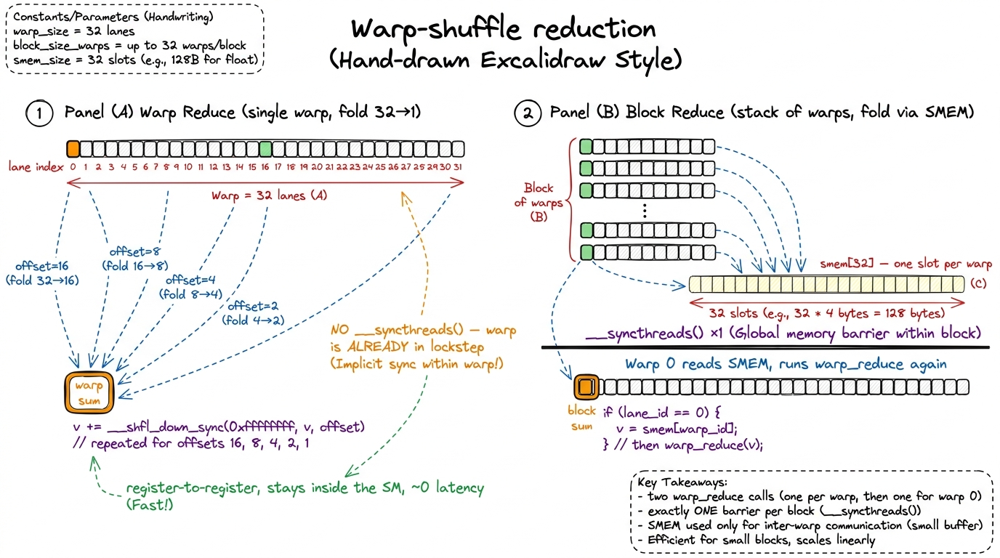
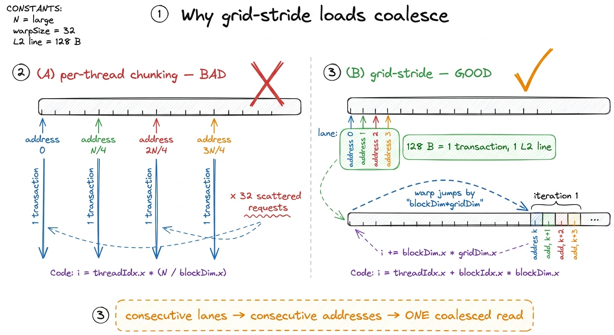
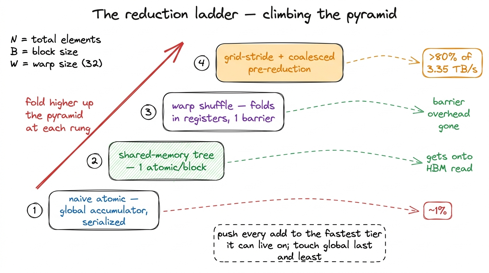

Atomics & reductions
A reduction is the humblest operation in all of parallel computing, and one of the most instructive: take a million numbers and boil them down to one. Add them all up. Or take their maximum. Or their minimum. The shape is always the same — many values in, a single value out. Written serially, it is a for loop a child could write:
acc = 0.0
for x in array:
acc += x # one number, folded in, a million timesThat loop is the whole problem, and — this is the surprising part — it is also the whole difficulty. Because look at what it demands: acc must hold the running total from the previous step before the next step can run. Step two cannot start until step one has finished writing acc. The operation is, at its heart, sequential. And a GPU is the opposite of sequential. The entire premise of the machine is thousands of threads all doing the same thing at the same instant. So a reduction pits the shape of the hardware against the shape of the problem, head to head. That collision is exactly why it teaches so much.
This is the question the article answers: how do you sum a million floats on a GPU without the sequential nature of acc += x throwing away all your parallelism? Getting this right forces you to walk the entire memory hierarchy — registers, shared memory, global memory — and to feel, in wall-clock time, exactly how much each tier costs. So we build it the way we build everything here: the dumb version first, a profile, then one honest step at a time, and by the end the same skeleton will hand you softmax, LayerNorm, and the online statistics inside FlashAttention for free.
What we're actually racing against
Before we write a line of GPU code, let's be clear about the finish line, because it decides everything.
We are summing an array of N floats. The reference answer is one line of NumPy. Our job is to match that answer while pulling a real fraction of the 3.35 TB/s of HBM3 bandwidth an H100 offers.1 HBM stands for High-Bandwidth Memory — the stacks of DRAM sitting right next to the GPU die. 3.35 TB/s is the H100 SXM figure; the PCIe card is a bit lower, and the newer B200 pushes past 8 TB/s. See HBM and global memory. Why is bandwidth the number that matters, and not FLOPs?
Think about the arithmetic per byte. Every float we read is 4 bytes, and per float we do exactly one floating-point add. That is a ratio of one FLOP for every four bytes moved — an arithmetic intensity of 0.25 FLOP/byte. That is almost nothing. Modern GPUs can do dozens of FLOPs for every byte they can fetch, so a kernel that does a quarter of a FLOP per byte will always be waiting on memory, never on the math. A reduction is the textbook memory-bound kernel: the adder is idle most of the time, twiddling its thumbs while the load units drag numbers in from HBM.
 figure rendering · A sum does one add per four bytes read. The math is trivial; the memor
figure rendering · A sum does one add per four bytes read. The math is trivial; the memorSo here is the scoring rule, and it is refreshingly simple. A sum reads every input exactly once and writes almost nothing. If we read N floats, that is 4N bytes, unavoidably. Divide 4N by the kernel's runtime and you get achieved bandwidth. Divide that by 3.35 TB/s and you get the only score that matters. The perfect reduction spends its entire runtime doing nothing but coalesced reads from HBM. Everything else — every atomic, every barrier, every idle thread — is pure overhead stealing time from that read. Keep that picture in your head; the rest of the article is a campaign to remove overhead until only the read remains.2 Floating-point addition is not associative: (a + b) + c can differ from a + (b + c) in the last bit or two, because each intermediate result gets rounded. So a parallel reduction and a serial one can disagree in the final few bits. That is not a bug — it is the price of doing the adds in a different order, and every fast reduction on every GPU has this property. If you need the exact serial answer, you cannot parallelize; but for training and inference, nobody does.
The tempting wrong answer: one big atomic
The first idea everyone has is beautiful in its simplicity. Give every thread one element. Have each thread add its element straight into a single global accumulator. To make sure two threads don't clobber each other, use atomicAdd, which the hardware guarantees is an indivisible read-modify-write. Correct by construction:
__global__ void sum_atomic_naive(const float* x, float* out, int N) {
int i = blockIdx.x * blockDim.x + threadIdx.x;
if (i < N) atomicAdd(out, x[i]); // every thread hits the SAME address
}It is correct. And it is a catastrophe. To see why, we have to ask the Socratic question: what does the hardware actually do when a thread says atomicAdd?
An atomic add on address out means "read the current value of out, add my number, write it back — and do not let anyone else touch out while I'm mid-flight." That "do not let anyone else touch it" is the whole point of the word atomic, and it is doing enormous hidden work. If every thread in the grid targets the same address, the hardware has no choice: it must let them through one at a time. Thread 2's add cannot begin until thread 1's add has fully landed, because thread 2 needs to see thread 1's result. A million threads, one address, single file.
We built a machine with thousands of lanes and then funneled every car onto one dirt road.
 figure rendering · One shared accumulator turns a parallel machine into a queue. The answ
figure rendering · One shared accumulator turns a parallel machine into a queue. The answPut it on the profiler and the story is stark. The kernel spends almost all of its time in L2 atomic transactions, and achieved bandwidth is stuck at roughly 1–2% of peak — single-digit percent — and it stays pinned there no matter how many threads you launch. That last part is the tell. In a healthy kernel, more threads means more work in flight means higher bandwidth. Here, more threads just means a longer queue for the same lock. Launching harder makes it worse, not better.3 Modern hardware does soften this. atomicAdd on floats is resolved by dedicated atomic ALUs sitting in the L2 cache, not by round-tripping to HBM, and the L2 can coalesce a few same-address atomics that arrive together in one request. So you get a bit better than truly serial. But the fundamental serialization of a single hot address survives all of that.
The lesson is precise, and it is worth saying slowly because people mislearn it: the problem is not that atomics are slow. The atomic instruction itself is fine. The problem is contention — many threads fighting over one address. An atomic on an address that only you touch is nearly free. So the whole game, from here to the end, is a single idea in two moves: reduce the number of atomics, and spread the survivors across many addresses. Every optimization below is one of those two moves.
The mental model: a pyramid you fold from the bottom up
Here is the picture to carry through the rest of the article — our "pebble graph," the one image everything hangs on. A GPU has three tiers of memory where threads can talk to each other, and they differ wildly in speed:
- Registers — private to each thread, the fastest storage on the chip, effectively zero-latency. But a register is private; two threads cannot normally read each other's registers… except within a warp, which we'll get to.
- Shared memory (SMEM) — an on-chip scratchpad that all threads in one block can read and write. Much faster than global, much smaller. See shared memory and L1.
- Global memory (HBM) — the big, slow, shared pool every thread in the grid can reach. This is where the input lives and where the final answer must land.
A reduction is a folding operation: you keep combining pairs until one value remains. The mental model is to do the folding as high up this pyramid as you possibly can, and only touch global memory at the very last moment, as rarely as possible. The naive atomic did the exact opposite — it folded everything directly into global memory, the slowest, most-contended tier. No wonder it crawled. The rest of the design is just: push the folding down to registers, up to shared memory for the hand-off, and out to global exactly once per block.
 figure rendering · The whole design in one picture: fold in registers, hand off through s
figure rendering · The whole design in one picture: fold in registers, hand off through sKeep this pyramid in view. Every tier below is us climbing it.
Tier one: reduce inside the block with shared memory
The fix has a name — hierarchical reduction — and it follows straight from the pyramid. Instead of a million threads each poking global memory, we let each thread block privately reduce its own chunk to a single partial sum, and only then do one atomic per block into the global total.
Do the arithmetic on the payoff. If a block owns 1024 elements and reduces them to one number internally, we have cut the number of global atomics by a factor of 1024. A million-element sum that needed a million atomics now needs about a thousand. That is three orders of magnitude of contention gone, and we haven't even chosen a clever algorithm yet — we just stopped touching global memory so often.
The reduction within the block happens in shared memory, and the classic in-SMEM algorithm is a tree reduction. Picture it. Each thread loads its element into smem[tid]. Now we fold. We pick a stride equal to half the block, and every thread in the lower half adds in the value from its partner stride slots up. After one step, half the array holds partial sums and the other half is dead. Halve the stride and repeat. After log2(1024) = 10 steps, smem[0] holds the whole block's sum — ten steps instead of 1024 serial adds.
Let's watch it happen on a tiny 8-element block by hand, because the picture is the whole idea. Say the block holds [3, 1, 7, 0, 4, 1, 2, 5].
- Stride 4: thread 0 does
3 + 4 = 7, thread 1 does1 + 1 = 2, thread 2 does7 + 2 = 9, thread 3 does0 + 5 = 5. Now the live half is[7, 2, 9, 5]. - Stride 2: thread 0 does
7 + 9 = 16, thread 1 does2 + 5 = 7. Live half:[16, 7]. - Stride 1: thread 0 does
16 + 7 = 23. Done. And indeed3+1+7+0+4+1+2+5 = 23. ✓
Three steps for 8 elements, because log2(8) = 3. Ten steps for 1024. That logarithm is the payoff of the tree.
__global__ void sum_tree(const float* x, float* out, int N) {
__shared__ float smem[1024];
int tid = threadIdx.x;
int i = blockIdx.x * blockDim.x + tid;
smem[tid] = (i < N) ? x[i] : 0.0f; // pad out-of-range with 0
__syncthreads();
for (int s = blockDim.x / 2; s > 0; s >>= 1) {
if (tid < s) smem[tid] += smem[tid + s];
__syncthreads(); // barrier every step
}
if (tid == 0) atomicAdd(out, smem[0]); // ONE atomic per block
} figure rendering · The tree: halve the stride each step, one barrier per step, thread 0 e
figure rendering · The tree: halve the stride each step, one barrier per step, thread 0 eWhy the __syncthreads() between steps? Because thread 0 at stride 2 reads smem[2], which thread 2 wrote at stride 4. If thread 0 races ahead before thread 2 has finished writing, it reads stale data and the sum is wrong. The barrier says: nobody moves to the next fold until everybody has finished this one. It is the price of using shared memory — a shared scratchpad needs everyone to agree on when it's safe to read.
Put it on the profiler and it's a giant leap. The atomic traffic that dominated the naive kernel has all but vanished — we went from N global atomics to N/1024. The bottleneck line no longer says "L2 atomic"; it says we're finally reading input from HBM at a real fraction of peak. But two costs are hiding in that loop, and the profiler points straight at them. First, a __syncthreads() barrier on every one of the ten steps — ten stop-the-block moments per reduction. Second, look at who's actually working: at stride 1, exactly one thread out of 1024 does the add while 1023 sit idle. At stride 2, two work and 1022 idle. The last few steps of the tree are a ghost town. We climbed one tier of the pyramid; now let's climb another and kill both costs.
Tier two: the warp is already synchronized — use it
Here is the hardware fact the tree quietly ignores, and it's the most important idea in the article. Threads on a GPU don't execute independently. They run in groups of 32 called warps, and the 32 threads (called lanes) in a warp execute the same instruction at the same time, in lockstep, on one Streaming Multiprocessor. This is the SIMT model — Single Instruction, Multiple Threads. See threads, warps, blocks, grids and SIMT and divergence.
Sit with what "lockstep" means for our barriers. Inside a single warp, there is no need for __syncthreads() at all. The 32 lanes can't get out of step with each other, because they're driven by one instruction stream — they physically cannot race. So every one of those ten barriers that fell inside a single warp's worth of work was pure waste. We were paying for synchronization the hardware already gave us for free.
And it gets better. Because a warp's lanes move together, NVIDIA gives them a way to swap register values directly, lane to lane, with no trip through shared memory at all: the warp shuffle intrinsics. __shfl_down_sync(mask, val, delta) hands each lane the value that the lane delta positions above it is holding in its register. Read that again — it's a register-to-register move that stays inside the SM and never touches SMEM or global. It's the cheapest communication the GPU offers, and it's exactly the "registers can't be shared… except within a warp" exception from our pyramid.4 The _sync suffix and the mask argument are mandatory since the Volta architecture. Volta introduced independent thread scheduling, which means lanes in a warp can diverge, so you must name exactly which lanes participate in the shuffle — usually 0xffffffff for a full warp of 32. The old maskless __shfl_down is deprecated and gone; if you find it in old code, it's a bug waiting to happen.
So we do the innermost five folds of the tree entirely in registers, with zero barriers and zero shared memory:
__device__ float warp_reduce(float v) {
// 32 -> 16 -> 8 -> 4 -> 2 -> 1, all in registers
for (int offset = 16; offset > 0; offset >>= 1)
v += __shfl_down_sync(0xffffffff, v, offset);
return v; // lane 0 holds the warp's sum
}Let's trace it on a warp of just 4 lanes (a real warp is 32, but the pattern is identical and 4 fits on a napkin). Say the lanes hold [3, 1, 7, 5], and we shuffle with offsets 2 then 1.
- offset 2: lane 0 gets lane 2's value (7) and does
3 + 7 = 10; lane 1 gets lane 3's value (5) and does1 + 5 = 6. Lanes now effectively[10, 6, …, …]. - offset 1: lane 0 gets lane 1's value (6) and does
10 + 6 = 16. And3+1+7+5 = 16. ✓ Lane 0 holds the answer.
Two shuffles for 4 lanes; five shuffles (offsets 16, 8, 4, 2, 1) collapse a full 32-lane warp to one number, and nobody waits at a barrier. The full block reduction now becomes a clean two-level affair. Every warp reduces itself to a single number with warp_reduce. Each warp's lane 0 drops that number into a tiny SMEM array — one slot per warp, at most 32 slots. One real __syncthreads() — the only one left in the whole kernel — lets everyone finish writing. Then the first warp reads that little array back and runs warp_reduce on it to get the block total.

figure rendering · Warp shuffles do the intra-warp folds in registers with no barriers; sNow, an honest caveat, because this is exactly the spot where people over-claim. Did the warp-shuffle version make the kernel twice as fast? Usually no — and understanding why is the whole point. We did not change how many bytes we read; the input is still 4N bytes read once. If the kernel was already saturating HBM bandwidth, the reduction phase was never the bottleneck, so speeding it up frees a resource we weren't waiting on. What warp shuffles remove is barrier and shared-memory overhead inside the block, and that matters most when the reduction is not perfectly bandwidth-saturated: small arrays, or configurations where the ten __syncthreads() were actually stalling warps. So why default to it? Because it's simpler, it touches SMEM far less (freeing that scratchpad for other things), and it guarantees the input read is the only thing that can be the bottleneck. It's the correct baseline, not a magic multiplier.
Tier three: make each thread do more, so the tree does less
One structural inefficiency is left, and — pay attention, because it's easy to miss — it has nothing to do with atomics or barriers. It's about idle threads at the very start.
Ask the naive-tree question again: if we launch exactly one thread per element, what does the very first fold do? At stride 512, threads 0–511 each do one add and threads 512–1023 do nothing but their initial load and then go idle for the entire rest of the reduction. Half the block is dead weight after the first step. We paid to launch those threads, schedule them, and have them each do a single load — and then they contribute nothing. That's wasteful, and worse, launching one thread per element means launching a million threads for a million elements, which is a lot of scheduling overhead for threads that mostly idle.
The classic fix is grid-stride loading with a serial pre-reduction. Launch far fewer threads than elements — say a few thousand — and have each thread walk the array in a grid-stride loop, accumulating many elements into a single private register before any cooperation happens at all. The tree only starts once every thread is already carrying a fat partial sum. No lane is wasted, because there's no "extra half" — every thread does real, sustained work.
__global__ void sum_fast(const float* x, float* out, int N) {
__shared__ float smem[32]; // one slot per warp
int tid = threadIdx.x;
int lane = tid & 31, wid = tid >> 5;
// 1) serial pre-reduction into a register (coalesced, grid-stride)
float v = 0.0f;
for (int i = blockIdx.x * blockDim.x + tid; i < N;
i += blockDim.x * gridDim.x)
v += x[i];
// 2) reduce each warp in registers
v = warp_reduce(v);
if (lane == 0) smem[wid] = v;
__syncthreads();
// 3) first warp reduces the per-warp partials
if (wid == 0) {
v = (lane < (blockDim.x >> 5)) ? smem[lane] : 0.0f;
v = warp_reduce(v);
if (lane == 0) atomicAdd(out, v); // one atomic per block, total
}
}This is the correct fast kernel, and every line earns its keep. Step 1 is where nearly all the runtime goes, and here's the subtle part that makes or breaks performance: the stride is blockDim.x * gridDim.x — the total number of threads in the grid — not blockDim.x. Why does that matter so much? Because it keeps consecutive lanes on consecutive addresses on every iteration. On any given pass of the loop, the 32 lanes of a warp touch 32 consecutive floats — x[i], x[i+1], … x[i+31] — which is exactly 128 contiguous bytes. The hardware fetches that as one clean memory transaction, one L2 cache line, no waste. This is memory coalescing, and it is the difference between using your bandwidth and throwing most of it away.5 The natural-looking alternative — give each thread a contiguous chunk of N/threads elements — shreds coalescing. On iteration 0, thread 0 reads element 0, thread 1 reads element N/threads, thread 2 reads 2N/threads… the 32 lanes touch 32 addresses scattered megabytes apart, forcing 32 separate transactions instead of one. Same total bytes, ~32× the number of memory requests. The grid-stride pattern exists precisely to avoid this.

figure rendering · Same bytes, wildly different cost. Chunking scatters the warp across mSteps 2 and 3 are just the barrier-light warp-shuffle tree from the previous section, applied to the fat partials that step 1 produced. And notice the atomic count now: it's the number of blocks — a few thousand at most — each hitting the global accumulator exactly once. A few thousand atomics, spread over time as blocks finish, is nothing; the L2's atomic units absorb them without breaking a sweat. Both of our two moves — fewer atomics, spread out — are fully realized.
The number that closes it out
Tune this kernel and it does exactly what a memory-bound reduction should: it reads the input once, coalesced, and spends its runtime on HBM traffic rather than on contention or synchronization. On an H100, the achieved bandwidth climbs to well over 80% of the 3.35 TB/s peak. Line it up against where we started and the whole arc is one sentence: we went from ~1% of peak (naive atomic) to the high-eighties — roughly a 50–80× speedup, three orders of magnitude of contention swept off the table — and the profiler's bottleneck line finally reads "memory throughput" with nothing pathological underneath it.
For a reduction, that is the definition of done. There is no more juice: the input has to be read, reading it is 4N bytes, and we're now doing essentially only that. You cannot beat the speed of light, and the speed of light here is one coalesced pass over HBM.6 Why not 100%? A few reasons, all small. The tail block where N isn't a clean multiple of the grid does a little padding work. The first-warp final reduction and the atomics add a sliver. And no real kernel hits 100% of a datasheet number — even a pure copy on an H100 tops out around 90-something percent because of DRAM refresh, address overhead, and scheduling gaps. High-eighties for a reduction is genuinely at the wall.
The ladder, in one breath
Look back at what we did, and notice we climbed the pyramid on purpose, one tier at a time:
- The naive atomic used global memory as the accumulator and serialized on one hot address. ~1% of peak.
- The shared-memory tree reduced per block, cutting global atomics by ~1000× and getting us onto the HBM read as the bottleneck — but paid ten barriers and idled most threads at the end.
- The warp shuffle did the innermost folds in registers with zero barriers, because a warp is already in lockstep — leaving exactly one
__syncthreads()per block. - The grid-stride pre-reduction made each thread arrive at the cooperative phase already carrying many elements, so no lane is wasted and every load is coalesced into one clean transaction.

figure rendering · The whole campaign as four rungs: each step moves the folding to a fasAnd here is the payoff that makes this the most reusable skeleton in kernel engineering: it isn't about sums at all. Swap the + for max and you have a max-reduction. Swap it for min, or track an index alongside the value, and you have argmin/argmax. The logsumexp at the heart of softmax, the running max-and-sum that FlashAttention streams online across tiles, the mean-and-variance inside a RMSNorm or LayerNorm — every one of them is this exact structure with the fold operator changed. The associativity caveat from the top applies to all of them, and so does the pyramid: reduce in registers, hand off through shared memory, touch global once. Get the humble sum right and you've gotten the shape of a whole family of production kernels right.
Next we carry this cooperative, warp-aware thinking into the first operation where reuse — not just reduction — becomes the prize: tiling a GEMM in shared memory.